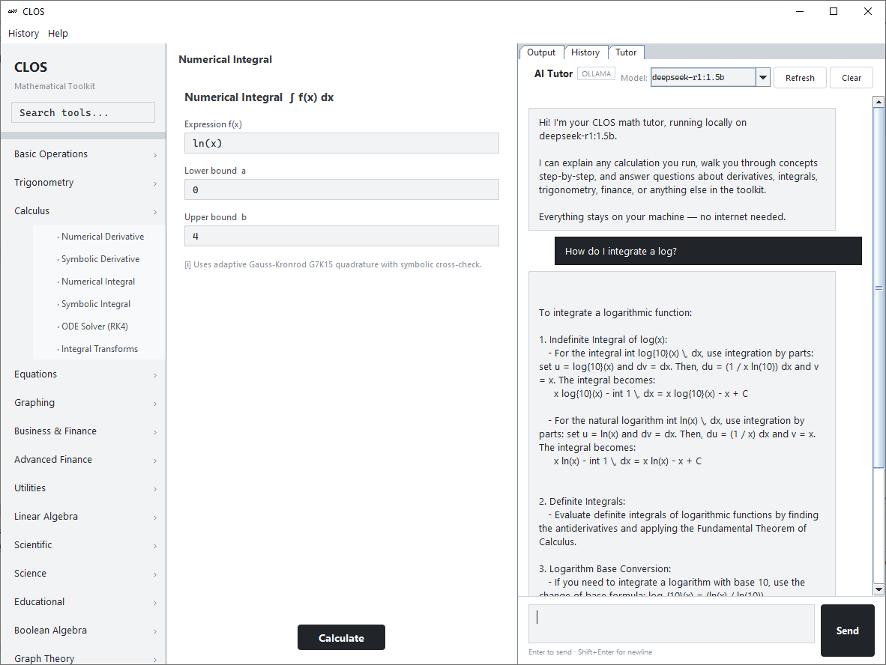
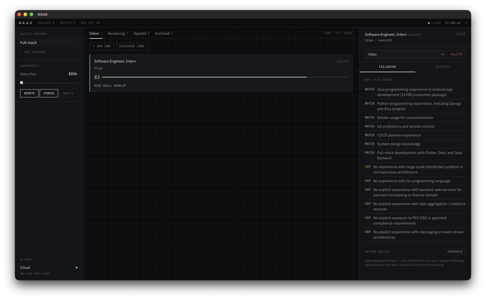
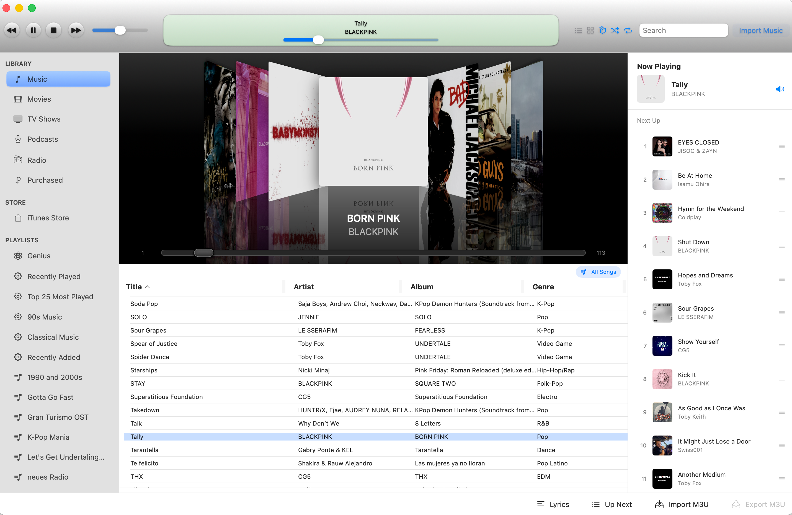
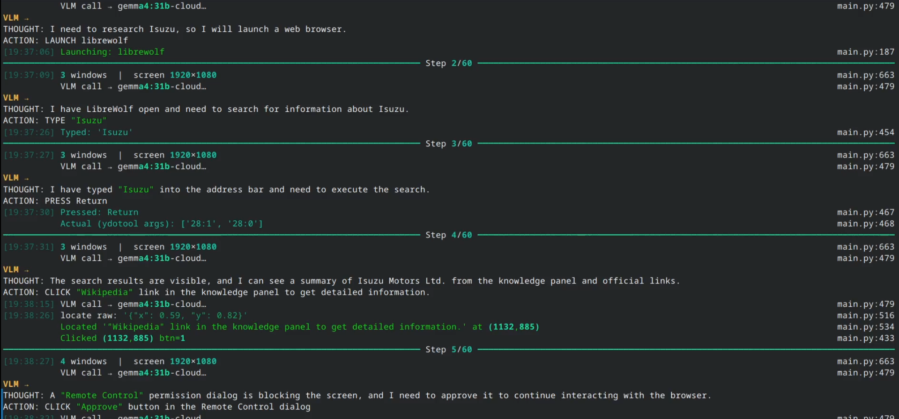
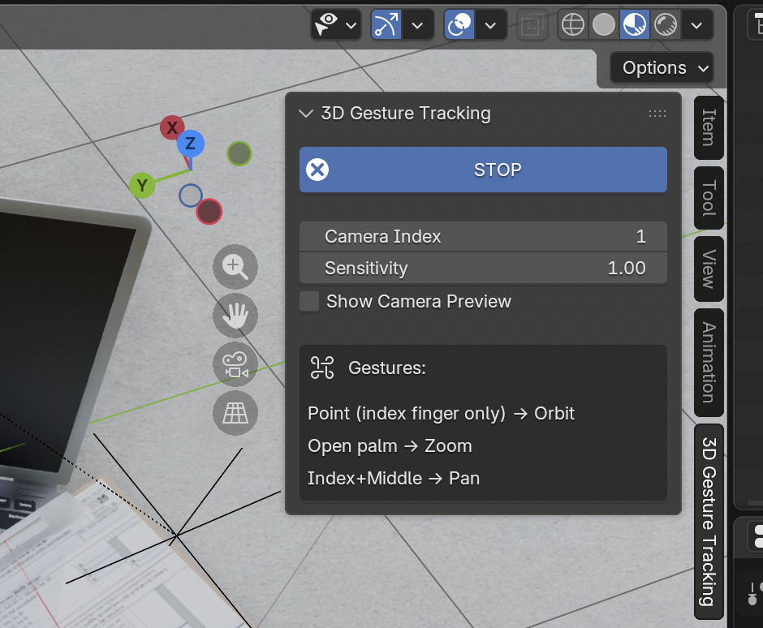
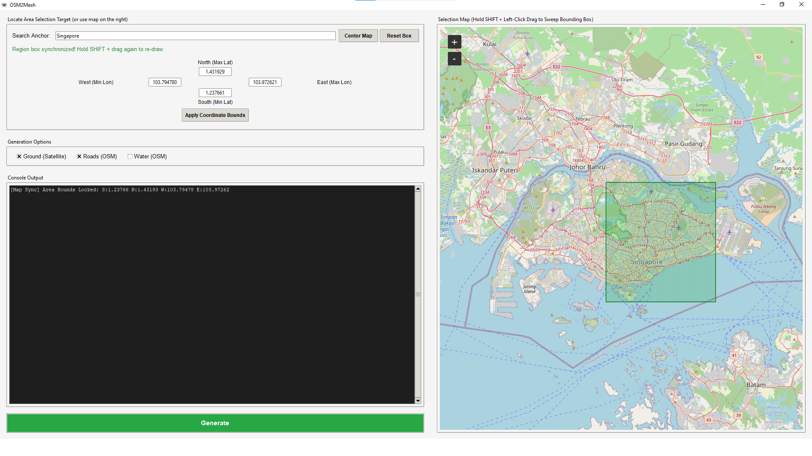
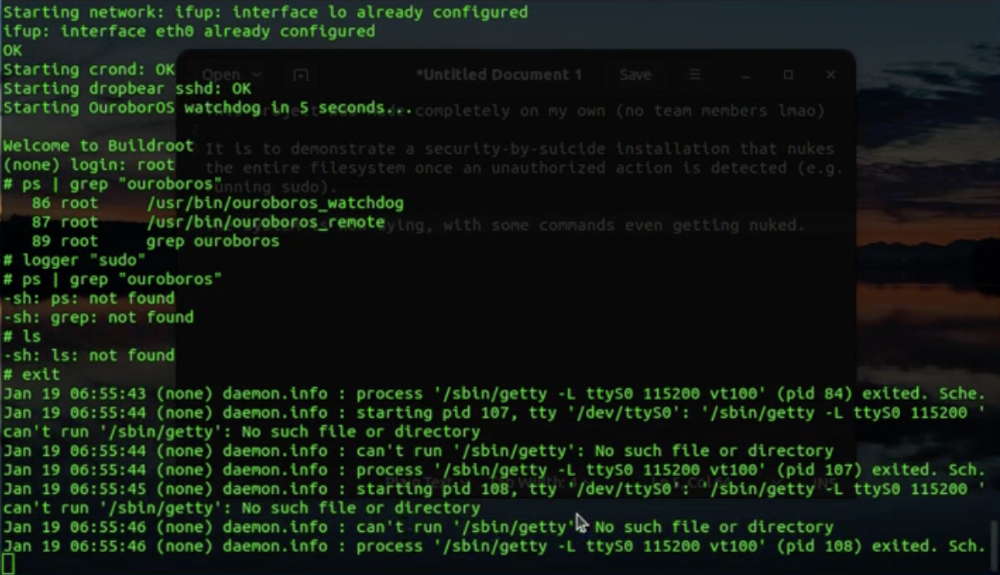
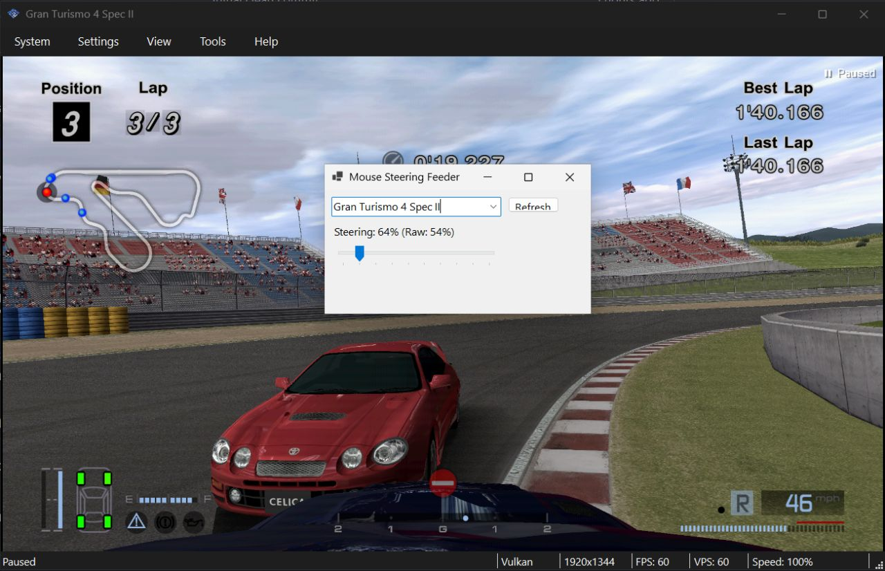
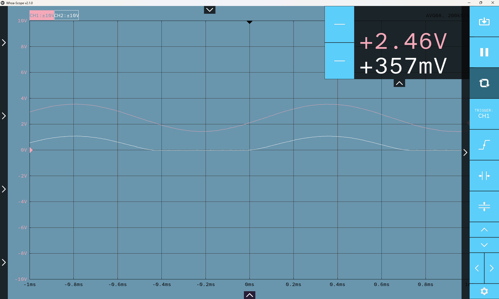

ALL PROJECTS

CLOS
Offline math utility with graphing, autodiff, equation solving, simulations, scripting, CLI and GUI capable of doing just about anything.

W.A.G.E.
Work Aggregation and Guidance Engine - A local-first AI job search strategy tool designed to make pre-application strategies more streamlined and easier, with a fit score, tailored resume bullets, and outreach drafting.

ClassicTunes
Native macOS audio player reviving legacy iTunes aesthetics with modern performance and system audio integration. Developed with the help of Google Gemini and GitHub Copilot + Qwen 2.5 Coder.

Specter
Local, privacy-first AI screen agent designed to automate and perform computer tasks with simple prompts for power users, and engineered for KDE Plasma on Wayland. Powered by Ollama.

3D Gesture Tracking
Real-time 3D gesture recognition and tracking application for Blender 5.0+ using computer vision and hand detection algorithms to control the 3D Viewport. Developed with the help of Claude Code.

OSM2Mesh
A procedural 3D city generator converting raw OpenStreetMap vector data into game-ready 3D meshes. Features multi-tier extrusion, deterministic material inference, and a multi-threaded interactive GUI workspace.

OuroborOS
A "security-by-suicide" Linux distribution. It is a high-paranoia environment designed to monitor its own system logs and immediately initiate a "Self-Destruct" sequence and a kernel panic when an invalid command is detected.

MouseSteering
Utility mapping mouse movement to virtual joystick axes for precise analog control in racing sims and games.

Whoa-Scope
The modernized open-source oscilloscope tool for hardware labs at Olin, made in collaboration. Featuring themes, accessibility fonts, native file export tooltips, stability fixes, and more.